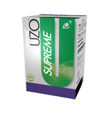

Uzo supreme
*Contiene salvado de arroz modificado. Diversos estudios científicos muestran que el salvado de arroz modificado es útil para el buen funcionamiento del sistema inmunológico. Favorece el aumento de células NK (Natural killer), las cuales son responsables de combatir las células malignas que se pueden desarrollar en el organismo
*Contiene fibras de cereales; la fibra es una aliado en el mantenimiento de la buena salud del corazón.
*Según avances científicos dietas bajas en grasa y ricas en fibra dietaria proveniente de cereales pueden reducir el riesgo de contraer algunos tipos de cáncer, enfermedad asociada a diversos factores.
*Importante aporte de Selenio, que ayuda al buen funcionamiento del sistema inmunológico.
Presentaciones y precios
Caja con 30 sobres: 193.150 COP